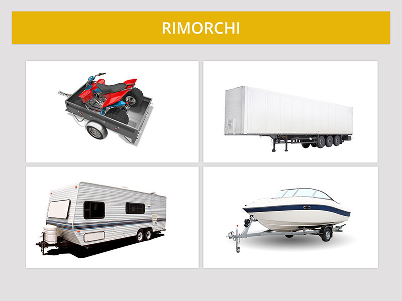

Rimorchi e semirimorchi

I rimorchi o i semirimorchi sono veicoli privi di motore, destinati ad essere trainati.
I rimorchi leggeri sono quelli di massa massima a pieno carico fino a 750 kg.
I semirimorchi non sono rimorchi privi di impianto frenante.
Non è vero che sono muniti di silenziatore (in quanto non hanno motore).
I rimorchi leggeri sono quelli di massa massima a pieno carico fino a 750 kg.
I semirimorchi non sono rimorchi privi di impianto frenante.
Non è vero che sono muniti di silenziatore (in quanto non hanno motore).